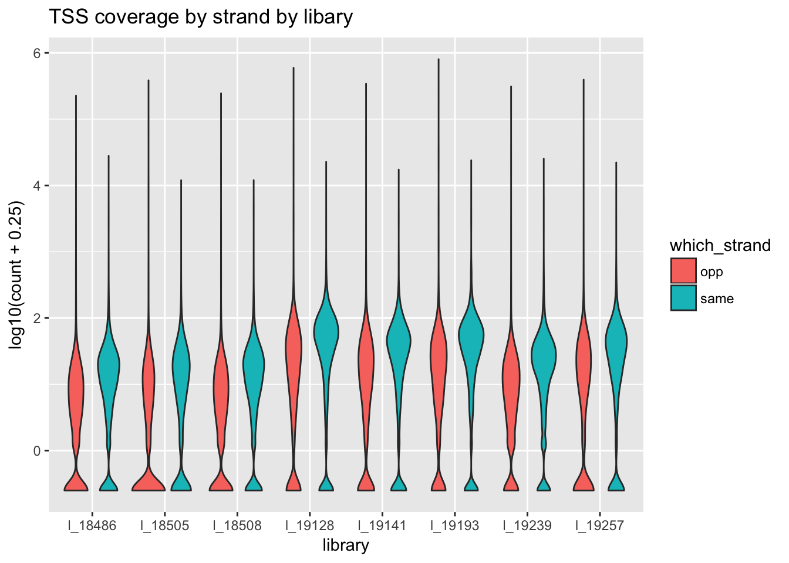

Last updated: 2018-04-03
Code version: 0852212
I will use this analysis to answer the question: Do eQTLs also equally affect antisense transcriptions? This will take advantage of strand specificity of the net-seq data and the phenominon of convergent and divergent transcription around TSS.
Workflow:
*Download eqtls
*Rank eqtls based on coverage in tss region, this may include seeing if the eqtl genes are in the filtered gene set from the strand specificity analysis
*Look at some of the top snps
-separate individuals by genome
-look at them in IGV
-box plots seperated by genotype, forward and reverse transcription
library(workflowr)Loading required package: rmarkdownThis is workflowr version 0.7.0
Run ?workflowr for help getting startedlibrary(tidyr)
library(dplyr)
Attaching package: 'dplyr'The following objects are masked from 'package:stats':
filter, lagThe following objects are masked from 'package:base':
intersect, setdiff, setequal, unionlibrary(reshape2)Warning: package 'reshape2' was built under R version 3.4.3
Attaching package: 'reshape2'The following object is masked from 'package:tidyr':
smithslibrary(ggplot2)Download eqtls and YRI genotypes from http://eqtl.uchicago.edu/jointLCL/ to /project2/gilad/briana/Net-seq-pilot/data/eqtl
wget http://eqtl.uchicago.edu/jointLCL/output_RNAseqGeuvadis_PC14.txt
wget http://eqtl.uchicago.edu/jointLCL/genotypesYRI.gen.txt.gzMake a list of the genes that have an eqtl with the effect size (so i can order which to look at) :
awk '{print $2}' eqtl_RNAseqGeuvadis.txt > eqtl_genes
awk '{print $1 "\t" $2 "\t" $6}' eqtl_RNAseqGeuvadis.txt > eqtl_genes_effectsize.txtThe filtered genes are in /project2/gilad/briana/genome_anotation_data/gencode.v19.annotation.distfilteredgenes.bed
Pull both of these into R so I can filter the genes by if they have an eqtl.
eqtl_gene= read.table("../data/eqtl_genes_effectsize.txt", stringsAsFactors = FALSE, header=TRUE)
filter_genes= read.table("../data/gencode.v19.annotation.distfilteredgenes.bed", stringsAsFactors = FALSE)
colnames(filter_genes)=c("chr", "start", "end", "gene", "score", "strand")Use the filter dplyr functions to filter the eqtl genes by genes that are covered in our list of filtered genes.
eqtl_gene_filter=eqtl_gene %>% semi_join(filter_genes, by="gene") %>% arrange(desc(beta))
eqtl_pergene= eqtl_gene_filter %>% group_by(gene) %>% tally()This shows that 3985 genes in the filter_genes file have at least one eqtl. The eqtl_gene_filter file has all the eqtl genes sorted in descending order by the beta value. Now I need to back filter the bed file to only include the genes in the eqtl genes. This will allow me to get coverage for each of these.
filter_genes_byeqtl= filter_genes %>% semi_join(eqtl_pergene, by="gene")
#write.table(filter_genes_byeqtl, "../data/gencode.v19.annotation.eqtlfilter.bed",col.names = TRUE, row.names = FALSE, quote = FALSE, sep="\t")This file is now in /project2/gilad/briana/genome_anotation_data/gencode.v19.annotation.eqtlfilter.bed
I need to modify gencode.v19.annotation.eqtlfilter.bed to include the TSS of each of these genes. I am looking at the first 500 basepairs of each gene.
awk '{if($6 == "+") print($1 "\t" $2 -500 "\t" $2 + 500 "\t" $4 "\t" $5 "\t" $6 ); else print($1 "\t" $3 - 500 "\t" $3 +500 "\t" $4 "\t" $5 "\t" $6 )}' gencode.v19.annotation.eqtlfilter.bed > gencode.v19.annotation.eqtlfilter_TSS.bed Bam to bed and sort each bedfile with sort -k1,1 -k2,2n
#!/bin/bash
#SBATCH --mail-type=END
module load Anaconda3
source activate net-seq
bamToBed -i YG-SP-NET3-18508_combined_Netpilot-sort.bam | sort -k1,1 -k2,2n > ../sorted_bed/YG-SP-NET3-18508_combined_Netpilot-bedsort.bed
bamToBed -i YG-SP-NET3-19128_combined_Netpilot-sort.bam | sort -k1,1 -k2,2n > ../sorted_bed/YG-SP-NET3-19128_combined_Netpilot-bedsort.bed
bamToBed -i YG-SP-NET3-19141_combined_Netpilot-sort.bam | sort -k1,1 -k2,2n > ../sorted_bed/YG-SP-NET3-19141_combined_Netpilot-bedsort.bed
bamToBed -i YG-SP-NET3-19193_combined_Netpilot-sort.bam | sort -k1,1 -k2,2n > ../sorted_bed/YG-SP-NET3-19193_combined_Netpilot-bedsort.bed
bamToBed -i YG-SP-NET3-19239_combined_Netpilot-sort.bam | sort -k1,1 -k2,2n > ../sorted_bed/YG-SP-NET3-19239_combined_Netpilot-bedsort.bed
bamToBed -i YG-SP-NET3-19257_combined_Netpilot-sort.bam | sort -k1,1 -k2,2n > ../sorted_bed/YG-SP-NET3-19257_combined_Netpilot-bedsort.bedNow I can write a script that counts the coverage for these TSS in a strand specific manner. Remeber that netseq is flipped strand so same strand should be the -S and opp strand is -s. This script is in the code directory and is called eqtl_stranded.sh.
#!/bin/bash
#SBATCH --job-name=eqtl_strand
#SBATCH --time=8:00:00
#SBATCH --output=eqtlstrand.out
#SBATCH --error=eqtlstrand.err
#SBATCH --partition=broadwl
#SBATCH --mem=40G
#SBATCH --mail-type=END
module load Anaconda3
source activate net-seq
sample=$1
describer=$(echo ${sample} | sed -e 's/.*\YG-SP-//' | sed -e "s/_combined_Netpilot-bedsort.bed$//")
bedtools coverage -counts -S -a /project2/gilad/briana/genome_anotation_data/gencode.v19.annotation.eqtlfilter_TSS.bed -b $1 > /project2/gilad/briana/Net-seq-pilot/output/eqtl_strand_spec/${describer}_same_eqtstrandedlTSS.txt
bedtools coverage -counts -s -a /project2/gilad/briana/genome_anotation_data/gencode.v19.annotation.eqtlfilter_TSS.bed -b $1 > /project2/gilad/briana/Net-seq-pilot/output/eqtl_strand_spec/${describer}_opp_eqtstrandedlTSS.txt
Create a wrapper to run this on all files: wrap_eqtl_strand.sh
#!/bin/bash
#SBATCH --job-name=w_eqtl_strand
#SBATCH --time=8:00:00
#SBATCH --output=weqtlstrand.out
#SBATCH --error=weqtlstrand.err
#SBATCH --partition=broadwl
#SBATCH --mem=8G
#SBATCH --mail-type=END
for i in $(ls /project2/gilad/briana/Net-seq-pilot/data/sorted_bed/); do
sbatch eqtl_stranded.sh /project2/gilad/briana/Net-seq-pilot/data/sorted_bed/$i
done
need to give more memory to 508, 128, 141, 193, 239
Pull in all files and join them the same strand ones on the first four columns
same_18486= read.table(file = "../data/eqtl_strand_spec/NET3-18486_same_eqtstrandedlTSS.txt", header =F, col.names=c("chr", "start", "end", "gene", "score", "strand", "same_18486"))
same_18505= read.table(file = "../data/eqtl_strand_spec/NET3-18505_same_eqtstrandedlTSS.txt", header =F, col.names=c("chr", "start", "end", "gene", "score", "strand", "same_18505"))
same_18508= read.table(file = "../data/eqtl_strand_spec/NET3-18508_same_eqtstrandedlTSS.txt", header =F, col.names=c("chr", "start", "end", "gene", "score", "strand", "same_18508"))
same_19128= read.table(file = "../data/eqtl_strand_spec/NET3-19128_same_eqtstrandedlTSS.txt", header =F, col.names=c("chr", "start", "end", "gene", "score", "strand", "same_19128"))
same_19141= read.table(file = "../data/eqtl_strand_spec/NET3-19141_same_eqtstrandedlTSS.txt", header =F, col.names=c("chr", "start", "end", "gene", "score", "strand", "same_19141"))
same_19193= read.table(file = "../data/eqtl_strand_spec/NET3-19193_same_eqtstrandedlTSS.txt", header =F, col.names=c("chr", "start", "end", "gene", "score", "strand", "same_19193"))
same_19239= read.table(file = "../data/eqtl_strand_spec/NET3-19239_same_eqtstrandedlTSS.txt", header =F, col.names=c("chr", "start", "end", "gene", "score", "strand", "same_19239"))
same_19257= read.table(file = "../data/eqtl_strand_spec/NET3-19257_same_eqtstrandedlTSS.txt", header =F, col.names=c("chr", "start", "end", "gene", "score", "strand", "same_19257"))Same strand:
all_same_strand=cbind(same_18486[,1:7], same_18505$same_18505, same_18508$same_18508, same_19128$same_19128,same_19141$same_19141, same_19193$same_19193, same_19239$same_19239, same_19257$same_19257)
colnames(all_same_strand)=c("chr", "start", "end", "gene", "score", "strand", "same_18486", "same_18505", "same_18508", "same_19128", "same_19141", "same_19193", "same_19239", "same_19257")Opp strand:
opp_18486= read.table(file = "../data/eqtl_strand_spec/NET3-18486_opp_eqtstrandedlTSS.txt", header =F, col.names=c("chr", "start", "end", "gene", "score", "strand", "opp_18486"))
opp_18505= read.table(file = "../data/eqtl_strand_spec/NET3-18505_opp_eqtstrandedlTSS.txt", header =F, col.names=c("chr", "start", "end", "gene", "score", "strand", "opp_18505"))
opp_18508= read.table(file = "../data/eqtl_strand_spec/NET3-18508_opp_eqtstrandedlTSS.txt", header =F, col.names=c("chr", "start", "end", "gene", "score", "strand", "opp_18508"))
opp_19128= read.table(file = "../data/eqtl_strand_spec/NET3-19128_opp_eqtstrandedlTSS.txt", header =F, col.names=c("chr", "start", "end", "gene", "score", "strand", "opp_19128"))
opp_19141= read.table(file = "../data/eqtl_strand_spec/NET3-19141_opp_eqtstrandedlTSS.txt", header =F, col.names=c("chr", "start", "end", "gene", "score", "strand", "opp_19141"))
opp_19193= read.table(file = "../data/eqtl_strand_spec/NET3-19193_opp_eqtstrandedlTSS.txt", header =F, col.names=c("chr", "start", "end", "gene", "score", "strand", "opp_19193"))
opp_19239= read.table(file = "../data/eqtl_strand_spec/NET3-19239_opp_eqtstrandedlTSS.txt", header =F, col.names=c("chr", "start", "end", "gene", "score", "strand", "opp_19239"))
opp_19257= read.table(file = "../data/eqtl_strand_spec/NET3-19257_opp_eqtstrandedlTSS.txt", header =F, col.names=c("chr", "start", "end", "gene", "score", "strand", "opp_19257"))all_opp_strand=cbind(opp_18486[,1:7], opp_18505$opp_18505, opp_18508$opp_18508, opp_19128$opp_19128,opp_19141$opp_19141, opp_19193$opp_19193, opp_19239$opp_19239, opp_19257$opp_19257)
colnames(all_opp_strand)=c("chr", "start", "end", "gene", "score", "strand", "opp_18486", "opp_18505", "opp_18508", "opp_19128", "opp_19141", "opp_19193", "opp_19239", "opp_19257")Calculate the %same:
perc_18486=all_same_strand$same_18486/(all_same_strand$same_18486 + all_opp_strand$opp_18486)
perc_18505=all_same_strand$same_18505/(all_same_strand$same_18505 + all_opp_strand$opp_18505)
perc_18508=all_same_strand$same_18508/(all_same_strand$same_18508 + all_opp_strand$opp_18508)
perc_19128=all_same_strand$same_19128/(all_same_strand$same_19128 + all_opp_strand$opp_19128)
perc_19141=all_same_strand$same_19141/(all_same_strand$same_19141 + all_opp_strand$opp_19141)
perc_19193=all_same_strand$same_19193/(all_same_strand$same_19193 + all_opp_strand$opp_19193)
perc_19239=all_same_strand$same_19239/(all_same_strand$same_19239 + all_opp_strand$opp_19239)
perc_19257=all_same_strand$same_19257/(all_same_strand$same_19257 + all_opp_strand$opp_19257)Create a table with these:
perc_all= cbind(all_same_strand[,1:6],perc_18486, perc_18505,perc_18508,perc_19128,perc_19141,perc_19193,perc_19239,perc_19257)Make this tidy to remove NA and to make box plots
perc_all_long=melt(perc_all, variable.name = "library", value.name = "perc_same",
id.vars = c("chr", "start", "end", "gene", "score", "strand"), na.rm = TRUE)Make a side by side box plot:
ggplot(perc_all_long, aes(x=library, y=perc_same)) + geom_violin() + ggtitle("Distribution of the precent of reads mapping to the same strand") 
This is good. Expectation is the samples have similar distributions of the
sessionInfo()R version 3.4.2 (2017-09-28)
Platform: x86_64-apple-darwin15.6.0 (64-bit)
Running under: macOS Sierra 10.12.6
Matrix products: default
BLAS: /Library/Frameworks/R.framework/Versions/3.4/Resources/lib/libRblas.0.dylib
LAPACK: /Library/Frameworks/R.framework/Versions/3.4/Resources/lib/libRlapack.dylib
locale:
[1] en_US.UTF-8/en_US.UTF-8/en_US.UTF-8/C/en_US.UTF-8/en_US.UTF-8
attached base packages:
[1] stats graphics grDevices utils datasets methods base
other attached packages:
[1] bindrcpp_0.2 ggplot2_2.2.1 reshape2_1.4.3 dplyr_0.7.4
[5] tidyr_0.7.2 workflowr_0.7.0 rmarkdown_1.8.5
loaded via a namespace (and not attached):
[1] Rcpp_0.12.15 knitr_1.18 bindr_0.1 magrittr_1.5
[5] munsell_0.4.3 colorspace_1.3-2 R6_2.2.2 rlang_0.1.6
[9] plyr_1.8.4 stringr_1.2.0 tools_3.4.2 grid_3.4.2
[13] gtable_0.2.0 git2r_0.21.0 htmltools_0.3.6 lazyeval_0.2.1
[17] yaml_2.1.16 rprojroot_1.3-2 digest_0.6.14 assertthat_0.2.0
[21] tibble_1.4.2 purrr_0.2.4 glue_1.2.0 evaluate_0.10.1
[25] labeling_0.3 stringi_1.1.6 compiler_3.4.2 pillar_1.1.0
[29] scales_0.5.0 backports_1.1.2 pkgconfig_2.0.1 This R Markdown site was created with workflowr